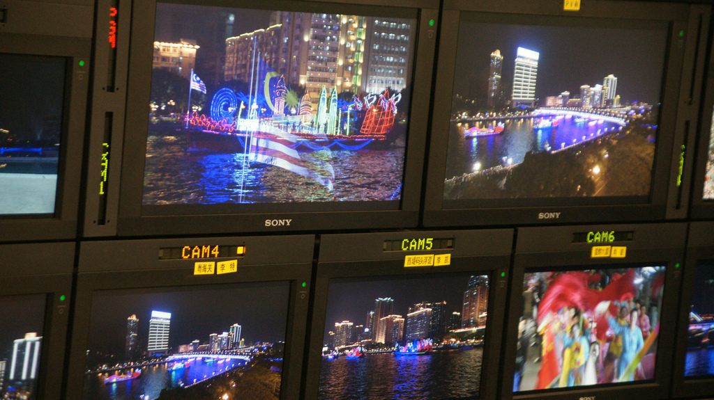
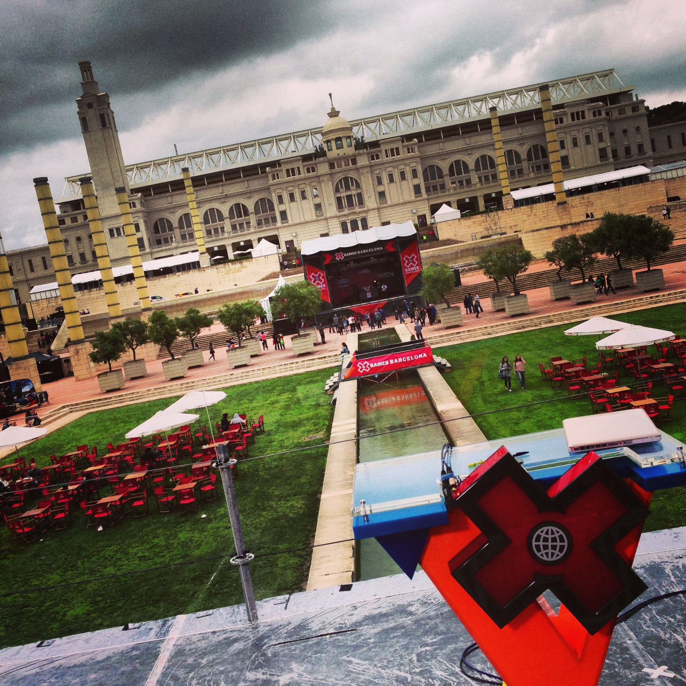
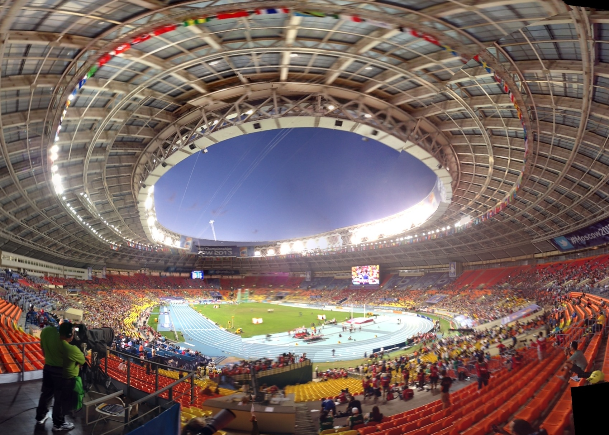
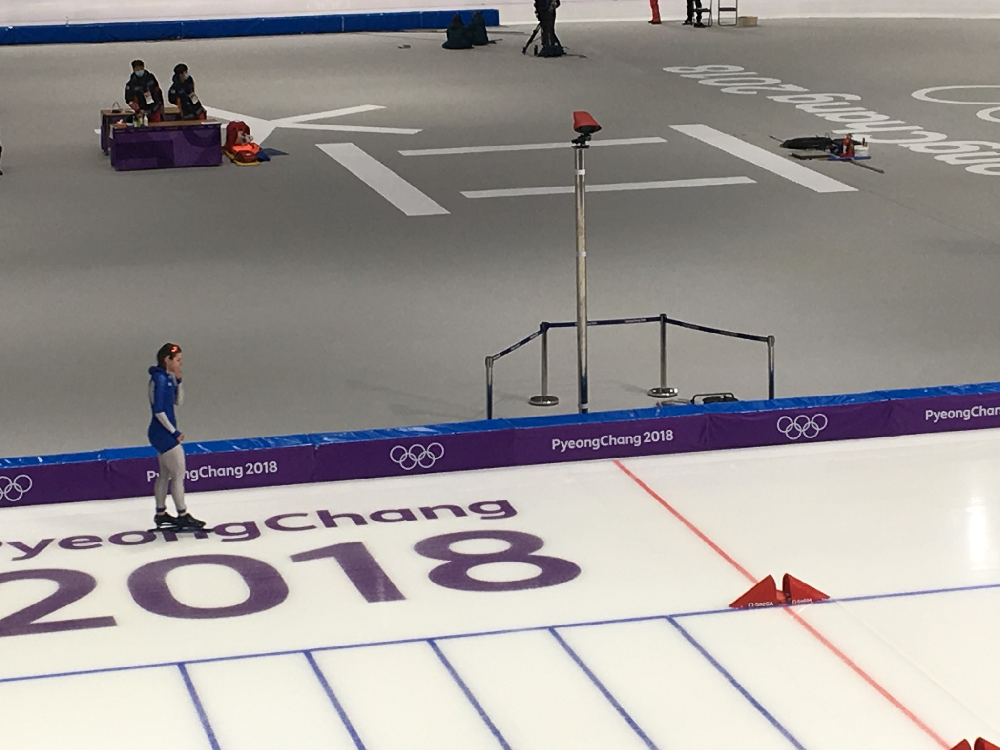
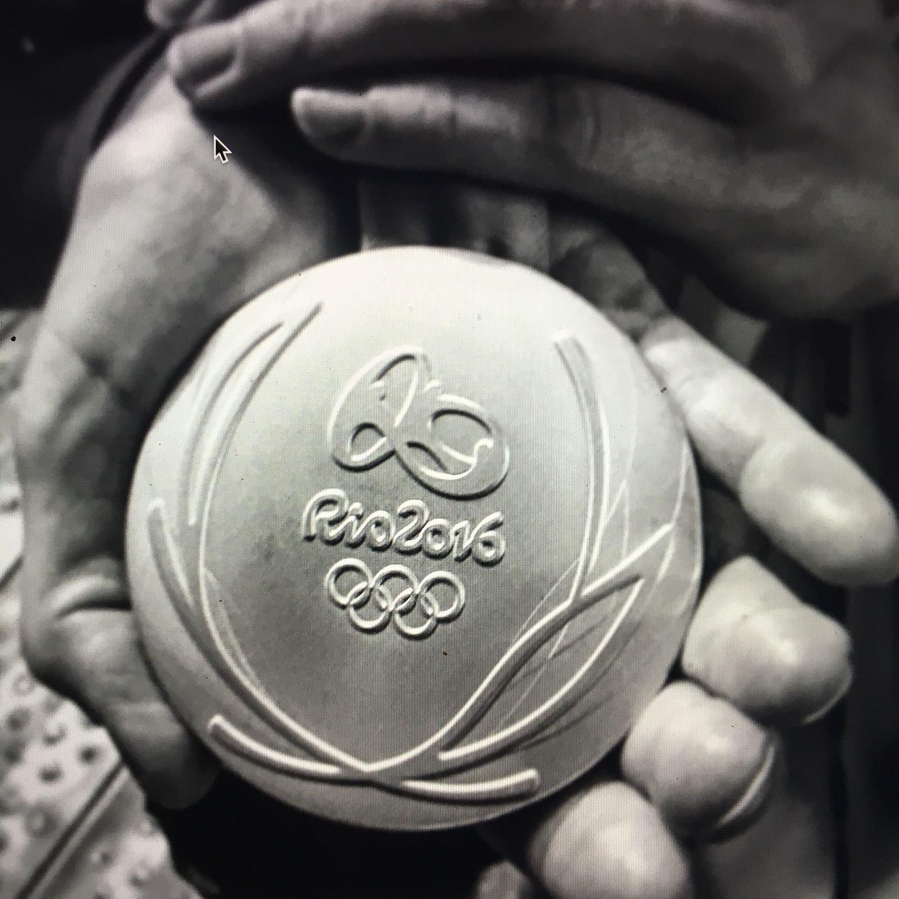

广播工程负责人
2025
成都世界运动会
职位： 广播工程负责人。
重点： 系统设计、集成以及 24/7 传输运营。
职位： 广播工程负责人。
重点： 系统设计、集成以及 24/7 传输运营。
职位： 场馆 IT 管理。
重点： 巴黎协和广场场馆的转播、网络与运营技术支持。
职位： 电视转播场馆运营管理。
重点： 转播准备、场馆流程协调与现场执行。
职位： 场馆技术经理。
重点： 工程运营、系统集成与网球场馆直播连续性。
职位： 多座球场技术管理。
重点： 系统监督、现场协调与多语言制作支持。
职位： Copacabana 演播室场馆技术经理，并承担 IBC 技术协调。
重点： 场馆运营、系统就绪与跨团队整合。
职位： 广播工程与运营支持。
重点： 多场馆交付、系统一致性与直播准备。
职位： 多项国际赛事中的技术与协调岗位。
重点： 累积场馆系统、主转播流程与现场运营经验。
这些项目背后的共同点很明确：技术责任、场馆协调、系统集成， 以及在高压环境下稳定交付。




